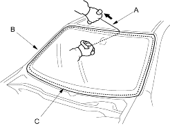
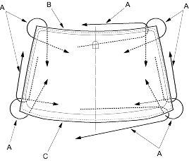

- With a helper on the outside, pull the piano wire (A) back and forth in a sawing motion. Hold the piano wire as close to the windshield (B) as possible to prevent damage to the body and dashboard.
Carefully cut through the rubber dam and adhesive (C) around the entire windshield.

Cutting portions:

- Carefully remove the windshield.
- With a knife, scrape the old adhesive smooth to a thickness of about 2 mm (0.08 in.) on the bonding surface around the entire windshield opening flange:
- Do not scrape down to the painted surface of the body; damaged paint will interfere with proper bonding.
- Remove the rubber dam and fasteners from the body.
- Clean the body bonding surface with a sponge dampened in alcohol. After cleaning, keep oil, grease and water from getting on the clean surface.
- If the old windshield is to be reinstalled, use a putty knife to scrape off all of the old adhesive, the fasteners and the rubber dam from the windshield. Clean the inside face and the edge of the windshield with alcohol where new adhesive is to be applied. Make sure the bonding surface is kept free of water, oil and grease.